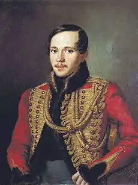
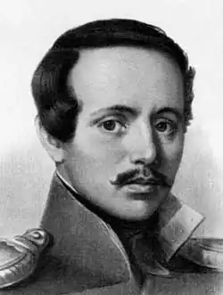

Лермонтов Михайло
(1814-1841)
Російський поет, у творчості якого відбились тенденції романтичного і реалістичного напряму. У віршах ("І нудно і сумно", "На дорогу йду я в самотині"), поемах ("Мцирі", 1840; "Маскарад", 1835), романі "Герой нашого часу" (1840) відчутна зосередженість автора на внутрішньому світі ліричного героя, у центрі — проблема особистості. "Герой нашого часу" — морально-психологічний роман про долю молодих людей після розгрому декабризму. Печорін — тип байронічного героя — постійно в пошуках ідеалу, в протиріччі з "сірою буденністю", з якої прагне вирватись, але не може. Літературні критики визначають вплив на Лермонтова Шатобріана, Мюссе, Фур'є, Скотта, Карамзіна, Пушкіна.